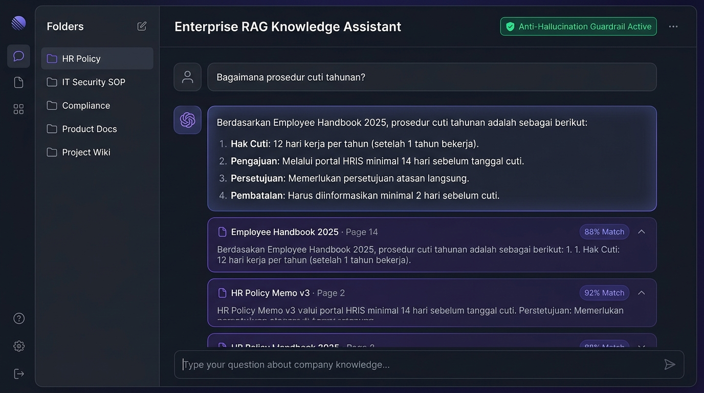
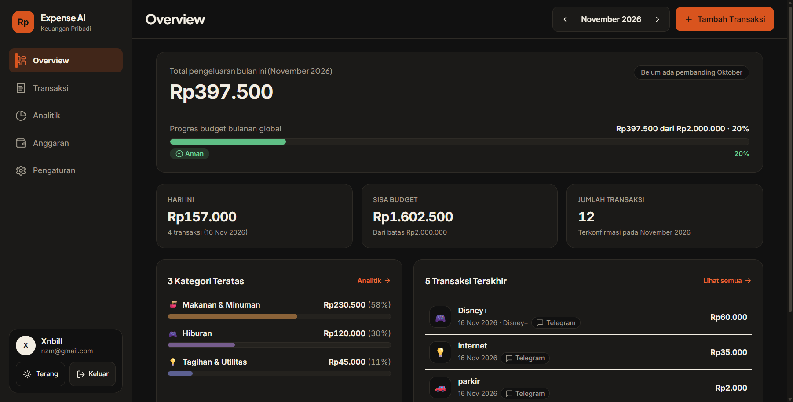
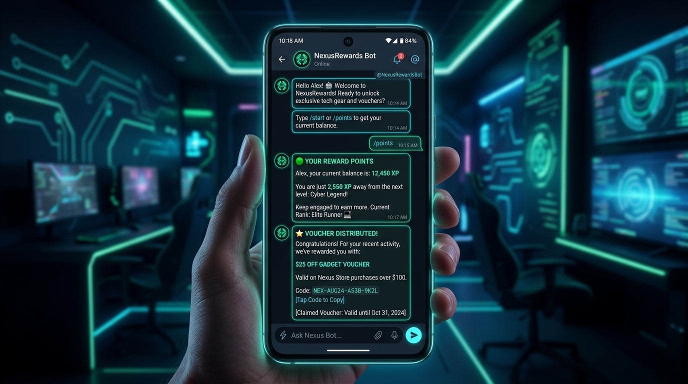

Nabiel Muhammad
Imjauzanansyah
Lulusan Sistem Informasi (GPA 3.66/4.00) dari Universitas Muhammadiyah Sumatera Utara. Fokus pada Applied Machine Learning dan Software Engineering — membangun solusi end-to-end dari model CNN-LSTM real-time (Jurnal ICT, akurasi 96%) hingga arsitektur bot produksi berkapasitas 1.000+ tx/jam di Telkomsel.
Menghubungkan Riset AI dengan Dampak Nyata
Dedikasi untuk mengembangkan sistem komputasi cerdas yang dapat diandalkan di lingkungan operasional skala nyata.
Lulusan Sistem Informasi Berorientasi Solusi
Saya menyelesaikan studi S1 Sistem Informasi di Universitas Muhammadiyah Sumatera Utara dengan indeks prestasi kumulatif 3.66/4.00. Fokus studi dan proyek mandiri saya berpusat pada perancangan arsitektur deep learning, pengolahan data tabular/citra, dan rekayasa backend.
Tugas akhir saya mengembangkan penerjemah bahasa isyarat BISINDO secara real-time menggunakan arsitektur gabungan CNN-LSTM dan MediaPipe Hands, dengan akurasi validasi mencapai 96% pada 11.000 frame data, serta telah dipublikasikan di Jurnal Ilmiah Komputasi (ICT). Baca publikasi ilmiah
Selain itu, saya aktif mengeksplorasi ekosistem multi-agent AI lokal (Ollama + CrewAI) serta arsitektur Retrieval-Augmented Generation (RAG) untuk dokumen enterprise.
Rekam Jejak Profesional
Pengalaman industri dan program intensif berskala nasional dalam rekayasa perangkat lunak dan machine learning.
Software Developer Intern
- Merancang dan membangun bot Telegram otomatisasi distribusi voucher yang terhubung dengan REST API internal SAMOSIR.LIVE.
- Menangani lonjakan transaksi hingga 1.000+ request/jam dengan sistem keamanan enkripsi End-to-End dan 2FA.
- Sistem beroperasi stabil selama 10+ bulan di lingkungan produksi tanpa kegagalan kritis.
- Menghemat estimasi 15+ jam kerja manual per minggu untuk tim operasional lapangan.
Machine Learning Engineer Trainee
- Menyelesaikan program intensif Coding Camp Machine Learning (450+ jam kurikulum berstandar industri).
- Membangun 5+ purwarupa berbasis data: sistem rekomendasi konten, klasifikasi teks NLP, dan computer vision.
- Memimpin proyek capstone ParentCare Analytics — platform web bertenaga model Random Forest untuk analisis pola pengasuhan anak.
- Menerapkan model deployment menggunakan Scikit-learn, TensorFlow, dan integrasi API ke frontend Vercel.
Karya & Implementasi Terpilih
Kompilasi proyek sistem AI terapan, aplikasi full-stack modern, dan pipeline data berkinerja tinggi.
NzSignify — BISINDO Sign Language Translator

Enterprise RAG Knowledge Assistant


Expense AI — Smart Finance

InvestMentor — Equity Analytics

Bot Voucher BGA Telkomsel

ParentCare Analytics
Fashion Studio ETL Pipeline
Kredensial & Sertifikasi Kompetensi
Pengakuan kompetensi profesi terverifikasi negara dari BNSP serta sertifikasi spesialisasi internasional dan nasional.
Pemrogram Web Pratama (Junior Web Programmer)
Dinyatakan Kompeten berdasarkan Standar Kompetensi Kerja Nasional Indonesia (SKKNI). Mencakup penguasaan struktur data, algoritma pemrograman, perancangan database terdistribusi, arsitektur web modern, dan standar kode bersih.
Sertifikat Kursus & Spesialisasi Akademi (Dicoding)
15 SertifikatTech Stack & Kapabilitas Teknis
Alat, framework, dan teknologi yang saya gunakan sehari-hari untuk merancang sistem cerdas.
AI & Machine Learning
Backend & Data Engineering
Tools & Ekosistem
Mari Terhubung
Saya selalu terbuka untuk diskusi proyek, tawaran pekerjaan full-time (remote atau onsite), kolaborasi riset, maupun peluang engineering lainnya.
nabiel.zmuhammad11@gmail.com